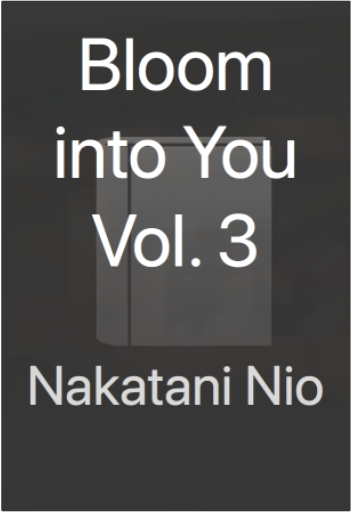

Kisses, Sighs, and Cherry Blossoms Pink: The Complete CollectionMilk Morinaga From Milk Morinaga, the author of the New York Times bestselling manga Girl Friends!
When the cherry blossoms bloom it means the start of another school year—and for the girls at Sakuraki High, it signals the birth of new dreams, fears, and relationships. In “Even If We’re Not Friends,” Nana and Hitomi have been dear friends since childhood, but when Nana gets into the exclusive Sakuraki High while Hitomi doesn’t, their true feelings for each other emerge. In “The Summer Closest to Heaven,” Natsuka is a ghost who resides at the school, still in love with one of the former students who is now the school nurse. In “A Kiss, Love, and a Prince,” Narumi gets her first kiss from Tachiba in the school play, and is shocked at being kissed by a girl.
Fourteen stories of blossoming romance between girls are interspersed throughout this heartfelt and adorably illustrated manga collection. Talk Dirty French: Beyond Merde: The curses, slang, and street lingo you need to Know when you speak francaisAlexis Munier, Emmanuel Tichelli Let's be sérieux!
Can't quite come up with the right French quip or four-letter word? With Talk Dirty: French, you'll be able to put your (middle) finger on it. Each entry provides an individual foreign gem, a useful French sentence employing the word, the expression's English counterpart, and its literal translation.
Whether you're a native-speaker, world traveler, or just looking to tell off those brash Parisians, these naughty words and risqué slang will surely give your tongue a French twist.
Les couilles: the balls
French Expression: Je l'ai avertie-elle ne m'a pas écoute alors maintenant je m'en bats les couilles.
Translation: I warned her—she didn't listen to me so now I'm washing my hands of it.
Literal Translation: I warned her—she didn't listen to me so now I'm flapping my balls of it. Reading Lolita in Tehran: A Memoir in BooksAzar Nafisi Every Thursday morning for two years in the Islamic Republic of Iran, Azar Nafisi, a bold and inspired teacher, secretly gathered seven of her most committed female students to read forbidden Western classics. Some came from conservative and religious families, others were progressive and secular; some had spent time in jail. They were shy and uncomfortable at first, unaccustomed to being asked to speak their minds, but soon they removed their veils and began to speak more freely–their stories intertwining with the novels they were reading by Jane Austen, F. Scott Fitzgerald, Henry James, and Vladimir Nabokov. As Islamic morality squads staged arbitrary raids in Tehran, as fundamentalists seized hold of the universities and a blind censor stifled artistic expression, the women in Nafisi’s living room spoke not only of the books they were reading but also about themselves, their dreams and disappointments.
Azar Nafisi’s luminous masterwork gives us a rare glimpse, from the inside, of women’s lives in revolutionary Iran. Reading Lolita in Tehran is a work of great passion and poetic beauty, a remarkable exploration of resilience in the face of tyranny, and a celebration of the liberating power of literature. NTR - Netsuzou Trap Vol. 1Kodama Naoko NTR - Netsuzou Trap is a dramatic tale of romance, lust, and betrayal, as two young woman explore their growing feelings for one another.
Yuma and Hotaru have been friends since childhood. It is only natural that when Yuma is nervous about her new boyfriend, she asks Hotaru along with her boyfriend for a double date. But when Hotaru offers herself to Yuma as “practice,” both girls realize that they’re more interested in each other than they are in their own boyfriends.
With boyfriends in the foreground but a secret, passionate tryst in the background, will Yuma and Hotaru try to forget what happened between them or have they fallen into a trap of true love and betrayal? NTR - Netsuzou Trap Vol. 2Kodama Naoko NTR - Netsuzou Trap is a dramatic tale of romance, lust, and betrayal, as two young woman explore their growing feelings for one another. With stunning artwork and a romantic storyline that oozes with erotic tension, NTR - Netsuzou Trap is a highly-anticipated title among yuri manga fans.
Yuma and Hotaru have been friends since childhood. It is only natural that when Yuma is nervous about her new boyfriend, she asks Hotaru along with her boyfriend for a double date. But when Hotaru offers herself to Yuma as “practice,” both girls realize that they’re more interested in each other than they are in their own boyfriends.
With boyfriends in the foreground but a secret, passionate tryst in the background, will Yuma and Hotaru try to forget what happened between them or have they fallen into a trap of true love and betrayal? NTR - Netsuzou Trap Vol. 3Kodama Naoko After she and Takeda break up, Yuma's life gets more complicated when Fujiwara takes an intimate photograph of her and Hotaru, and then Hotaru reveals a secret she's been hiding from Yuma. | Bloom into You Vol. 1Nakatani Nio I THINK I MIGHT BE FALLING IN LOVE WITH YOU…
Yuu has always adored shoujo manga and yearns for the day when someone might give her a love confession that would send her heart aflutter. Yet when a junior high school classmate confesses his feelings to her–she feels nothing. Disappointed and confused, Yuu enters high school, where she sees the confident and beautiful student council member Nanami. When the next person to confess to Yuu is Nanami herself, has her romantic dream finally come true?  Bloom into You Vol. 3Nakatani Nio A charming love story about two young women who together discover that their dreams of a heart-pounding romance can indeed come true!
Yuu has always loved shoujo manga and fantasizes about the day that she too will get a love confession that will send her heart a-flutter. Yet when a male classmate confesses his feelings for her ... she feels nothing. Disappointed and confused, Yuu enters high school still unsure how to respond. That’s when Yuu sees the beautiful student council president Nanami turn down a suitor with such maturity and finesse that Yuu is inspired to ask her for advice. But when the next person to confess to Yuu is the alluring Nanami herself, has Yuu's shoujo romance finally begun? After Hours, Vol. 1Yuhta Nishio There’s always something going on at night. Sooner or later, you’ll find your scene.
Emi Ashiana is 24, unemployed, and not really sure what she wants do with her life. When a friend invites her to a dance club, Emi doesn’t expect much. But what she finds will change her world!
The club is hopping and Emi isn’t…so she ends up hiding in a corner after her friend ditches her to flirt with a guy! Emi figures the night is a bust, but then someone amazing comes to her rescue. Kei is a DJ, and her effortless self-confidence captivates Emi. Is this just a wonderful night out or the start of the rest of her life? Hot Gimmick SMegumi Nishizaki Think you know everything about Hot Gimmick? Well, think again! Hot Gimmick S, an original novelization inspired by the super-popular shojo series Hot Gimmick, boasts an ending that is completely different than how the manga series concludes. Hatsumi Narita, a somewhat indecisive coed, must navigate the choppy waters of company housing life and try to keep her love life on track too. She starts dating her extremely bossy neighbor Ryoki, but how will her dreamy older brother Shinogu feel about this? It¿s the ending that manga fans are dying to read and are bound to be talking about for a long time to come! Plus, a bonus, heart-pounding manga episode that¿s all about Hatsumi and Shinogu! French In Your Face!: 1,001 Smiles, Frowns, Laughs, and Gestures to get your point across in FrenchLuc Nisset A face is worth 1,001 French words
Using the stories that our faces, appearance, and gestures tell, French in Your Face helps you learn and remember essential French vocabulary and everyday expressions relating to personality, attitudes, moods, and emotions.
This hugely entertaining book is packed with illustrations that will tickle your funny bone and fine-tune your ability to communicate, face-to-face, in French. |


 Made with Delicious Library
Made with Delicious Library